Superficies contaminadas
Máquinas, pesas, colchonetas y vestuarios acumulan microorganismos que sobreviven horas o días.
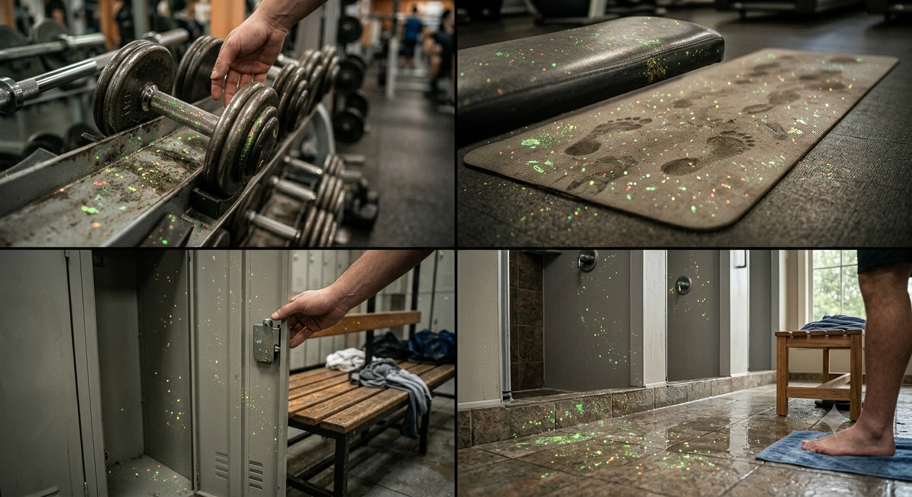
Desinfección segura y eficaz para espacios de entrenamiento
El ácido hipocloroso (HOCl) es un desinfectante de amplio espectro, seguro para personas y equipos, que elimina bacterias, virus y hongos sin dejar residuos tóxicos.
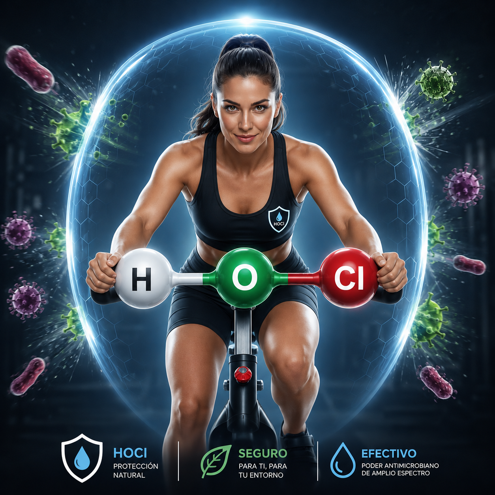
Los espacios de entrenamiento concentran sudor, bacterias y virus que pueden propagarse rápidamente.
Máquinas, pesas, colchonetas y vestuarios acumulan microorganismos que sobreviven horas o días.

Hongos como el pie de atleta y bacterias como el estafilococo se transmiten por contacto directo.
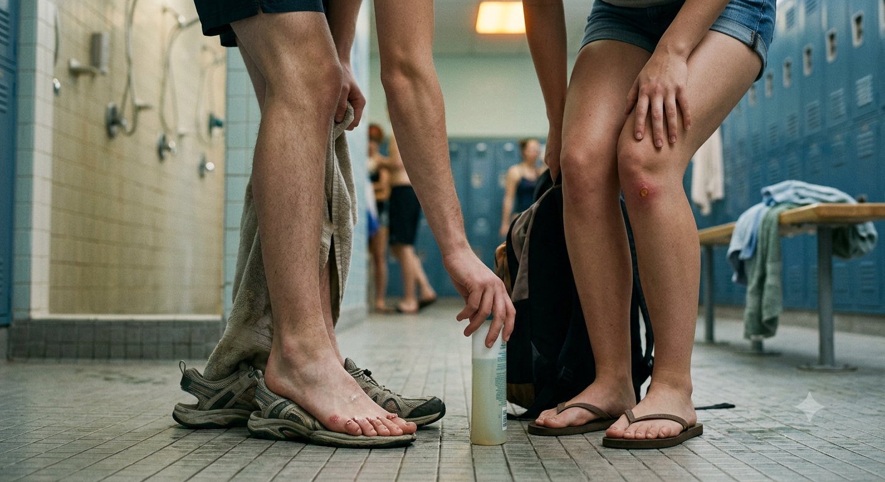
Gripe, resfriados y COVID‑19 se propagan en espacios cerrados con alta afluencia de personas.
Muchos desinfectantes convencionales irritan la piel, dañan equipos y dejan olores fuertes.
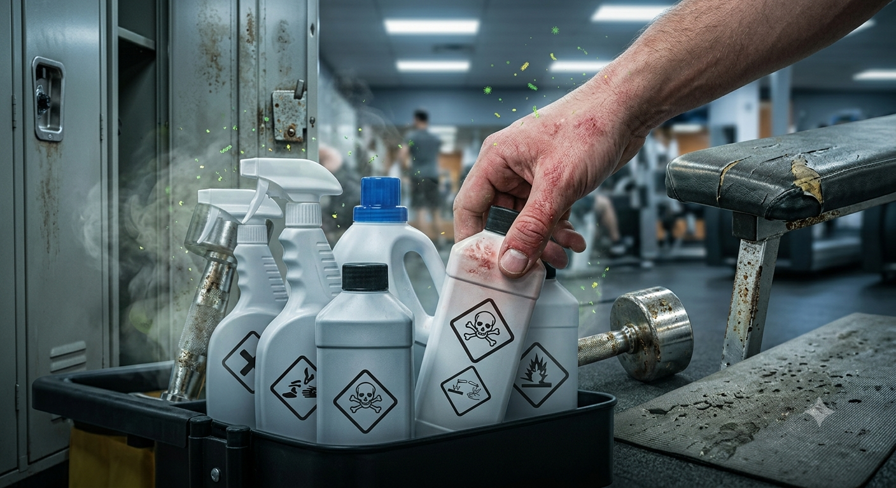
Un desinfectante natural que el propio cuerpo humano produce para combatir infecciones.
El HOCl no es un químico artificial: tu propio cuerpo lo produce. Cuando un neutrófilo (glóbulo blanco) detecta un patógeno, desencadena el estallido respiratorio, un proceso que genera ácido hipocloroso para destruir bacterias, virus y hongos de forma natural.
El HOCl sintético se genera mediante la electrólisis de una solución salina diluida, imitando este proceso biológico. Es eficaz contra bacterias, virus, hongos y esporas, pero no tóxico para las personas ni corrosivo para los materiales.
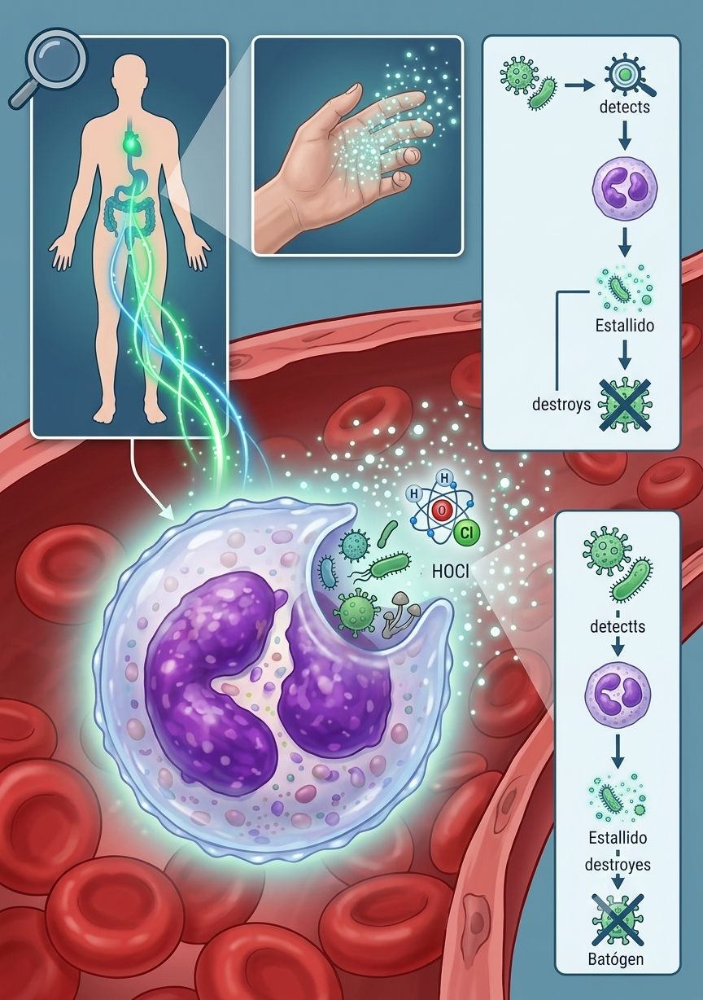
Estudios respaldan la eficacia del HOCl en entornos deportivos y sanitarios.
Registrado como desinfectante de nivel intermedio‑alto, aprobado para uso en superficies de contacto con alimentos y en entornos médicos.
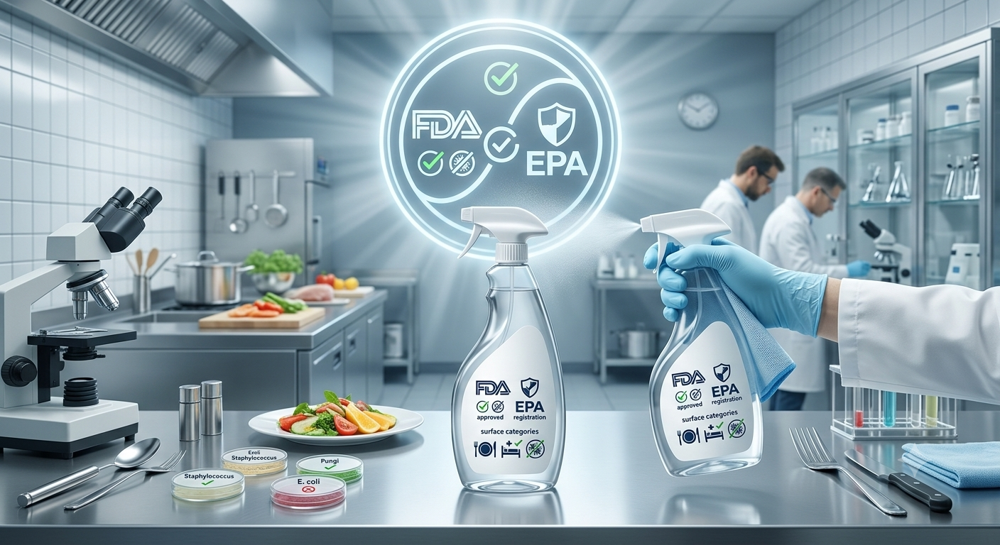
Reducción del 99,99 % de carga bacteriana en equipos de entrenamiento tras aplicación de HOCl nebulizado.
 📊 Ver presentación
📊 Ver presentación
El HOCl es hasta 80 veces más eficaz que el hipoclorito sódico a igual concentración de cloro libre.
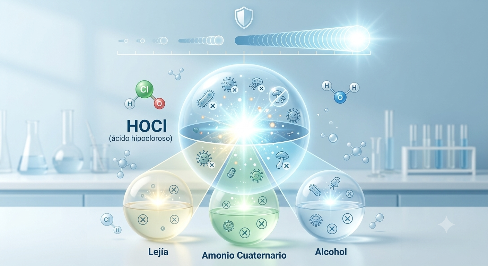
No produce compuestos orgánicos volátiles (COV) ni subproductos cancerígenos.
Adopta una solución que cuida de tus clientes, tu equipo y el medio ambiente.
Siente la confianza que te brinda la protección molecular que tu cuerpo genera,
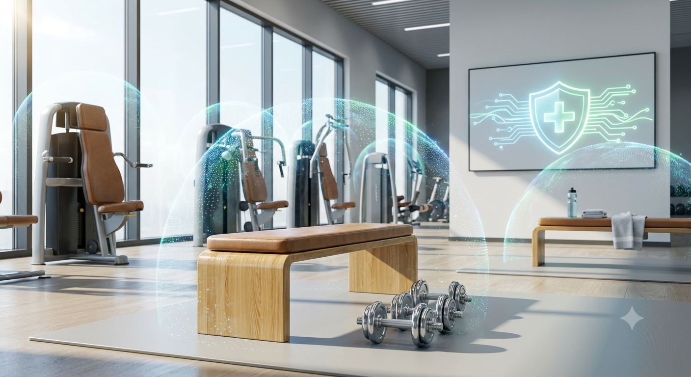
No desprende vapores irritantes; el ambiente se mantiene fresco.
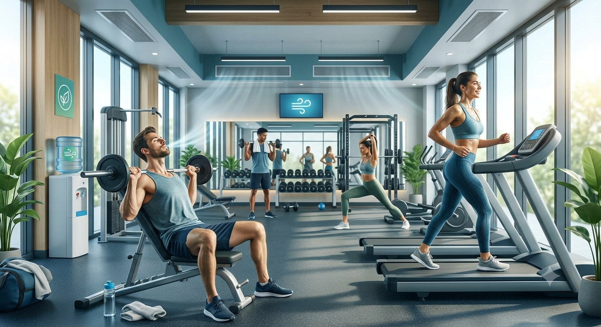
No daña goma, plástico, metal ni telas; prolonga la vida útil de los equipos.
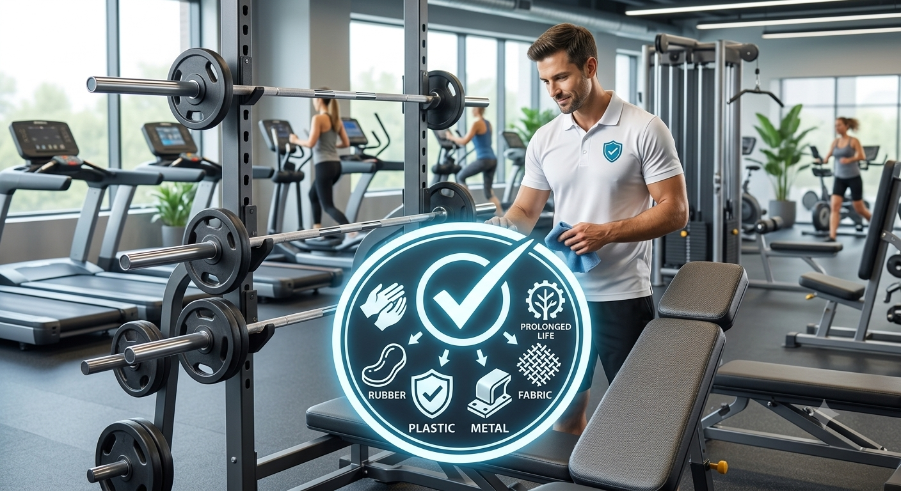
Dueños de gimnasios y entrenadores que ya confían en HOCl.
“Desde que usamos HOCl, las bajas por infecciones cutáneas se redujeron drásticamente. Nuestros clientes notan la diferencia.”
“Es increíblemente eficaz y no deja olor a cloro. Lo aplicamos en colchonetas y pesas varias veces al día.”
“La inversión en un generador de HOCl se amortizó en pocos meses. Ahora ahorramos en productos químicos.”
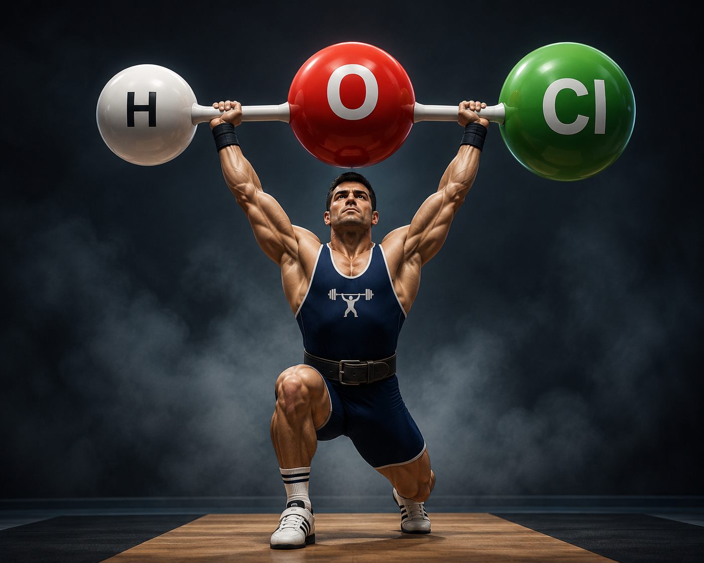